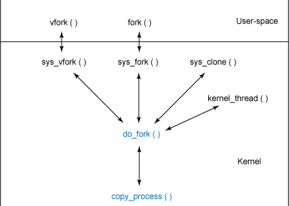
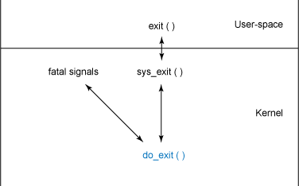

Average rating (55 votes)
Average rating (55 votes)-
 Show articles and other content related to my search: linux process management
Show articles and other content related to my search: linux process management
Linux is a very dynamic system with constantly changing computing needs. The representation of the computational needs of Linux centers around the common abstraction of the process. Processes can be short-lived (a command executed from the command line) or long-lived (a network service). For this reason, the general management of processes and their scheduling is very important.
From user-space, processes are represented by process identifiers (PIDs). From the user's perspective, a PID is a numeric value that uniquely identifies the process. A PID doesn't change during the life of a process, but PIDs can be reused after a process dies, so it's not always ideal to cache them.
In user-space, you can create processes in any of several ways. You can
execute a program (which results in the creation of a new process) or,
within a program, you can invoke a fork or
exec system call. The
fork call results in the creation of a child
process, while an exec call replaces the
current process context with the new program. I discuss each of these
methods to understand how they work.
For this article, I build the description of processes by first showing the kernel representation of processes and how they're managed in the kernel, then review the various means by which processes are created and scheduled on one or more processors, and finally, what happens if they die.
Within the Linux kernel, a process is represented by a rather large
structure called task_struct. This structure
contains all of the necessary data to represent the process, along with a
plethora of other data for accounting and to maintain relationships with
other processes (parents and children). A full description of the
task_struct is beyond the scope of this
article, but a portion of task_struct is shown
in Listing 1. This code contains the specific elements this article
explores. Note that task_struct resides in
./linux/include/linux/sched.h.
Listing 1. A small portion of task_struct
struct task_struct {
volatile long state;
void *stack;
unsigned int flags;
int prio, static_prio;
struct list_head tasks;
struct mm_struct *mm, *active_mm;
pid_t pid;
pid_t tgid;
struct task_struct *real_parent;
char comm[TASK_COMM_LEN];
struct thread_struct thread;
struct files_struct *files;
...
};
|
In Listing 1, you can see several items that you'd expect, such as the
state of execution, a stack, a set of flags, the parent process, the
thread of execution (of which there can be many), and open files. I
explore these later in the article but will introduce a few here. The
state variable is a set of bits that indicate
the state of the task. The most common states indicate that the process is
running or in a run queue about to be running
(TASK_RUNNING), sleeping
(TASK_INTERRUPTIBLE), sleeping but unable to be
woken up (TASK_UNINTERRUPTIBLE), stopped
(TASK_STOPPED), or a few others. A complete
list of these flags is available in ./linux/include/linux/sched.h.
The flags word defines a large number of
indicators, indicating everything from whether the process is being
created (PF_STARTING) or exiting
(PF_EXITING), or even if the process is
currently allocating memory (PF_MEMALLOC). The
name of the executable (excluding the path) occupies the
comm (command) field.
Each process is also given a priority (called
static_prio), but the actual priority of the
process is determined dynamically based on loading and other factors. The
lower the priority value, the higher its actual priority.
The tasks field provides the linked-list
capability. It contains a prev pointer
(pointing to the previous task) and a next
pointer (pointing to the next task).
The process's address space is represented by the
mm and active_mm
fields. The mm represents the process's memory
descriptors, while the active_mm is the
previous process's memory descriptors (an optimization to improve context
switch times).
Finally, the thread_struct identifies the stored
state of the process. This element depends on the particular architecture
on which Linux is running, but you can see an example of this in
./linux/include/asm-i386/processor.h. In this structure, you'll find the
storage for the process when it is switched from the executing context
(hardware registers, program counter, and so on).
Now, let's explore how you manage processes within Linux. In most cases,
processes are dynamically created and represented by a dynamically
allocated task_struct. One exception is the
init process itself, which always exists and is
represented by a statically allocated
task_struct. You can see an example of this in
./linux/arch/i386/kernel/init_task.c.
All processes in Linux are collected in two different ways. The first is a
hash table, which is hashed by the PID value; the second is a circular
doubly linked list. The circular list is ideal for iterating through the
task list. As the list is circular, there's no head or tail; but as the
init_task always exists, you can use it as an
anchor point to iterate further. Let's look at an example of this to walk
through the current set of tasks.
The task list is not accessible from user-space, but you can easily solve
that problem by inserting code into the kernel in the form of a module. A
very simple program is shown in Listing 2 that iterates the task list and
provides a small amount of information about each task
(name, pid, and
parent name). Note here that the module uses
printk to emit the output. To view the output,
you need to view the /var/log/messages file with the
cat utility (or
tail -f /var/log/messages in real time). The
next_task function is a macro in sched.h that
simplifies the iteration of the task list (returns a
task_struct reference of the next task).
Listing 2. Simple kernel module to emit task information (procsview.c)
#include <linux/kernel.h>
#include <linux/module.h>
#include <linux/sched.h>
int init_module( void )
{
/* Set up the anchor point */
struct task_struct *task = &init_task;
/* Walk through the task list, until we hit the init_task again */
do {
printk( KERN_INFO "*** %s [%d] parent %s\n",
task->comm, task->pid, task->parent->comm );
} while ( (task = next_task(task)) != &init_task );
return 0;
}
void cleanup_module( void )
{
return;
}
|
You can compile this module with the Makefile shown in Listing 3. When
compiled, you can insert the kernel object with
insmod procsview.ko and remove it with
rmmod procsview.
Listing 3. Makefile to build the kernel module
obj-m += procsview.o KDIR := /lib/modules/$(shell uname -r)/build PWD := $(shell pwd) default: $(MAKE) -C $(KDIR) SUBDIRS=$(PWD) modules |
After insertion, /var/log/messages displays output as shown below. You can
see here the idle task (called swapper) and the
init task (pid 1).
Nov 12 22:19:51 mtj-desktop kernel: [8503.873310] *** swapper [0] parent swapper Nov 12 22:19:51 mtj-desktop kernel: [8503.904182] *** init [1] parent swapper Nov 12 22:19:51 mtj-desktop kernel: [8503.904215] *** kthreadd [2] parent swapper Nov 12 22:19:51 mtj-desktop kernel: [8503.904233] *** migration/0 [3] parent kthreadd ... |
Note that it's also possible to identify the currently running task. Linux
maintains a symbol called current that is the
currently running process (of type
task_struct). If at the end of
init_module you add the line:
printk( KERN_INFO, "Current task is %s [%d], current->comm, current->pid ); |
you would see:
Nov 12 22:48:45 mtj-desktop kernel: [10233.323662] Current task is insmod [6538] |
Note that the current task is insmod, because
the init_module function executes within the
context of the execution of the insmod command.
The current symbol actually refers to a
function (get_current) and can be found in an
arch-specific header (for example,
./linux/include/asm-i386/current.h).
So, let's walk through the creation of a process from user-space. The
underlying mechanism is the same for user-space tasks and kernel tasks, as
both eventually rely on a function called
do_fork to create the new process. In the case
of creating a kernel thread, the kernel calls a function called
kernel_thread (see
./linux/arch/i386/kernel/process.c), which performs some initialization,
then calls do_fork.
A similar action occurs for user-space process creation. In user-space, a
program calls fork, which results in a system
call to the kernel function called sys_fork
(see ./linux/arch/i386/kernel/process.c). The function relationships are
shown graphically in Figure 1.
Figure 1. Function hierarchy for process creation

From Figure 1, you can see that do_fork provides
the basis for process creation. You can find the
do_fork function in ./linux/kernel/fork.c
(along with the partner function,
copy_process).
The do_fork function begins with a call to
alloc_pidmap, which allocates a new PID. Next,
do_fork checks to see whether the debugger is
tracing the parent process. If it is, the
CLONE_PTRACE flag is set in the
clone_flags in preparation for forking. The
do_fork function then continues with a call to
copy_process, passing the flags, stack,
registers, parent process, and newly allocated PID.
The copy_process function is where the new
process is created as a copy of the parent. This function performs all
actions except for starting the process, which is handled later. The first
step in copy_process is validation of the
CLONE flags to ensure that they're consistent.
If they're not, an EINVAL error is returned.
Next, the Linux Security Module (LSM) is consulted to see whether the
current task may create a new task. To learn more about LSMs in the
context of Security-Enhanced Linux (SELinux), check out the
Resources section.
Next, the dup_task_struct function (found in
./linux/kernel/fork.c) is called, which allocates a new
task_struct and copies the current process's
descriptors into it. After a new thread stack is set up, some state
information is initialized and control returns to
copy_process. Back in
copy_process, some housekeeping is performed in
addition to several other limit and security checks, including a variety
of initialization on your new task_struct. A
sequence of copy functions is then invoked that copy individual aspects of
the process, from copying open file descriptors
(copy_files), copying signal information
(copy_sighand and
copy_signal), copying process memory
(copy_mm), and finally copying the thread
(copy_thread).
The new task is then assigned to a processor, with some additional checking
based on the processors on which the process is allowed to execute
(cpus_allowed). After the priority of the new
process inherits the priority of the parent, a small amount additional
housekeeping is performed, and control returns to
do_fork. At this point, your new process exists
but is not yet running. The do_fork function
fixes this with a call to wake_up_new_task.
This function, which you can find in ./linux/kernel/sched.c), initializes
some of the scheduler housekeeping information, places the new process in
a run queue, then wakes it up for execution. Finally, upon returning to
do_fork, the PID value is returned to the
caller and the process is complete.
While a process exists in Linux, it can potentially be scheduled through
the Linux scheduler. Although outside of the scope of this article, the
Linux scheduler maintains a set of lists for each priority level on which
task_struct references reside. Tasks are
invoked through the schedule function
(available in ./linux/kernel/sched.c), which determines the best process
to run based on loading and prior process execution history. You can learn
more about the Linux version 2.6 scheduler in
Resources.
Process destruction can be driven by several events—from normal
process termination, through a signal, or through a call to the
exit function. However process exit is driven,
the process ends through a call to the kernel function
do_exit (available in ./linux/kernel/exit.c).
This process is shown graphically in Figure 2.
Figure 2. Function hierarchy for process destruction

The purpose behind do_exit is to remove all
references to the current process from the operating system (for all
resources that are not shared). The destruction process first indicates
that the process is exiting by setting the
PF_EXITING flag. Other aspects of the kernel
use this indication to avoid manipulating this process while it's being
removed. The cycle of detaching the process from the various resources
that it attained during its life is performed through a series of calls,
including exit_mm (to remove memory pages) to
exit_keys (which disposes of per-thread session
and process security keys). The do_exit
function performs various accountings for the disposal of the process,
then a series of notifications (for example, to signal the parent that the
child is exiting) is performed through a call to
exit_notify. Finally, the process state is
changed to PF_DEAD, and the
schedule function is called to select a new
process to execute. Note that if signalling is required to the parent (or
the process is being traced), the task will not completely disappear. If
no signalling is necessary, a call to
release_task will actually reclaim the memory
that the process used.
Linux continues to evolve, and one area that will see further innovation and optimization is process management. While keeping true to UNIX principles, Linux continues to push the boundaries. New processor architectures, symmetrical multiprocessing (SMP), and virtualization will drive new advances in this area of the kernel. One example is the new O(1) scheduler introduced in Linux version 2.6, which provides scalability for systems with large numbers of tasks. Another is the updated threading model using the Native POSIX Thread Library (NPTL), which enables efficient threading beyond the prior LinuxThreads model. You can learn more about these innovations and what's ahead in Resources.
Learn
- One of the most innovative aspects of the
2.6 kernel is its O(1) scheduler. It allows Linux to scale to very large
numbers of processes without the typical overhead. You can learn more
about the 2.6 kernel schedule in
"Inside the Linux Scheduler"
(developerWorks, June 2006).
- For a great look at memory management in
Linux, check out Mel Gorman's
Understanding the Linux Virtual Memory Manager
(Prentice Hall, 2004), which is available in PDF form. This book
provides a detailed but accessible presentation of memory management in
Linux, including a chapter on process address spaces.
- For a nice introduction to process
management, see
Performance Tuning for Linux: An Introduction to Kernels
(Prentice Hall, 2005). A sample chapter is available from
IBM Press.
- Linux provides an interesting approach to
system calls that involves transitioning between user-space and the kernel
(separate address spaces). You can read more about this in
"Kernel command using Linux system calls"
(developerWorks, March 2007).
- In this article, you saw cases in which
the kernel checked the security capabilities of the caller. The basic
interface between the kernel and the security framework is called the
Linux Security Module. To explore this module in the context of
SELinux, read
"Anatomy of Security-Enhanced Linux (SELinux)"
(developerWorks, April 2008).
- The
Portable Operating System Interface (POSIX) standard for threads
defines a standard application programming interface (API) for creating
and managing threads. You can find implementations for POSIX on Linux, Sun
Solaris, and even non-UNIX-based operating systems.
- The
Native POSIX Thread Library
is a threading implementation in the Linux kernel for efficiently
executing POSIX threads. This technology was introduced into the 2.6
kernel, where the prior implementation was called
LinuxThreads.
- Read
"TASK_KILLABLE: New process state in Linux"
(developerWorks, September 2008) for an introduction to a useful
alternative to the TASK_UNINTERRUPTIBLE and TASK_INTERRUPTIBLE process
states.
- Read more of
Tim's
articles on developerWorks.
- In the
developerWorks Linux zone,
find more resources for Linux developers (including developers who are
new to Linux), and scan our
most popular articles and
tutorials.
-
See all
Linux tips and
Linux tutorials on developerWorks.
-
Stay current with
developerWorks technical events and Webcasts.
Get products and technologies
-
With
IBM trial software,
available for download directly from developerWorks, build your next development
project on Linux.
Discuss
-
Get involved in the
developerWorks community through blogs, forums, podcasts, and spaces.

M. Tim Jones is an embedded firmware architect and the author of Artificial Intelligence: A Systems Approach, GNU/Linux Application Programming (now in its second edition), AI Application Programming (in its second edition), and BSD Sockets Programming from a Multilanguage Perspective. His engineering background ranges from the development of kernels for geosynchronous spacecraft to embedded systems architecture and networking protocols development. Tim is a Consultant Engineer for Emulex Corp. in Longmont, Colorado.
Average rating (55 votes)
Table of contents
Tags
Popular article tags |
My article tagsSkip to tags list
Popular article tags |
My article tags
Popular tags
- ajax (230)
- and (48)
- android (75)
- apache (51)
- application_a... (87)
- application_... (444)
- architecture (265)
- architecture_-... (45)
- atom (41)
- business_proce... (39)
- business_proce... (50)
- cloud (120)
- cloud_computi... (87)
- components (51)
- configuration_... (56)
- css_(cascading... (37)
- databases_and... (125)
- db2 (36)
- design (43)
- development (35)
- dojo (48)
- dom_(document_... (49)
- eclipse (122)
- editing (39)
- formatting (37)
- frameworks (48)
- general_progr... (109)
- html (92)
- html5 (71)
- integration (53)
- interoperabili... (49)
- java (336)
- java_technol... (201)
- javascript (163)
- jquery (55)
- jsf (35)
- json (37)
- json_(javascri... (40)
- linux (313)
- mashups (42)
- messaging (69)
- mobile (38)
- mobile_and_emb... (36)
- mobility (35)
- multimedia (37)
- namespaces (39)
- open_source (267)
- parsing (46)
- patterns (39)
- performance (81)
- perl (36)
- php (131)
- php_(hypertex... (114)
- programming (40)
- python (85)
- rest (67)
- ruby (37)
- schemas (73)
- security (81)
- services (54)
- soa (120)
- soa_(service-... (152)
- soap_(simple_... (93)
- spring (47)
- standards (99)
- standards_and... (59)
- tips (56)
- web (129)
- web_2.0 (137)
- web_authoring (65)
- web_developme... (59)
- web_services (279)
- websphere (57)
- wsdl_(web_serv... (44)
- xhtml_(extensi... (51)
- xml (421)
- xpath_(xml_pat... (54)
- xquery_(xml_qu... (48)
- xslt (46)
- xslt_(xsl_tran... (57)
End of Popular tags
My tags
Read Popular tags
End of My tags
- ajax (230)
- and (48)
- android (75)
- apache (51)
- application_a... (87)
- application_... (444)
- architecture (265)
- architecture_-... (45)
- atom (41)
- business_proce... (39)
- business_proce... (50)
- cloud (120)
- cloud_computi... (87)
- components (51)
- configuration_... (56)
- css_(cascading... (37)
- databases_and... (125)
- db2 (36)
- design (43)
- development (35)
- dojo (48)
- dom_(document_... (49)
- eclipse (122)
- editing (39)
- formatting (37)
- frameworks (48)
- general_progr... (109)
- html (92)
- html5 (71)
- integration (53)
- interoperabili... (49)
- java (336)
- java_technol... (201)
- javascript (163)
- jquery (55)
- jsf (35)
- json (37)
- json_(javascri... (40)
- linux (313)
- mashups (42)
- messaging (69)
- mobile (38)
- mobile_and_emb... (36)
- mobility (35)
- multimedia (37)
- namespaces (39)
- open_source (267)
- parsing (46)
- patterns (39)
- performance (81)
- perl (36)
- php (131)
- php_(hypertex... (114)
- programming (40)
- python (85)
- rest (67)
- ruby (37)
- schemas (73)
- security (81)
- services (54)
- soa (120)
- soa_(service-... (152)
- soap_(simple_... (93)
- spring (47)
- standards (99)
- standards_and... (59)
- tips (56)
- web (129)
- web_2.0 (137)
- web_authoring (65)
- web_developme... (59)
- web_services (279)
- websphere (57)
- wsdl_(web_serv... (44)
- xhtml_(extensi... (51)
- xml (421)
- xpath_(xml_pat... (54)
- xquery_(xml_qu... (48)
- xslt (46)
- xslt_(xsl_tran... (57)
View as cloud | list
- ajax 230
- and 48
- android 75
- apache 51
- application_a... 87
- application_d... 444
- architecture 265
- architecture_... 45
- atom 41
- business_proc... 39
View as cloud | list


Sign in or register to leave a comment.
Note: HTML elements are not supported within comments.